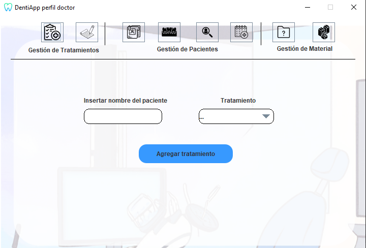

Ayuda: Añadir Tratamiento
Los siguientes pasos le guiarán a través del proceso de añadir
un tratamiento a un paciente:
- Añadir paciente al que se le raliza el tratamiento: Desde la pantalla,
añada el paciente al que desea hacer el tratamiento utilizando el campo de texto provisto (Nombre del paciente).
- Especificar fecha: Después de especificar el paciente,
seleccione el tratamiento que se le desea hacer (Tratamiento).
- Agregar tratamiento: Una vez que haya agregado el paciente
deseado y
el tratamiento, haga clic en el botón "Agregar Tratamiento" para añadir el tratamiento especificado.

Si tiene alguna pregunta o necesita ayuda adicional,
no dude en comunicarse con nosotros.